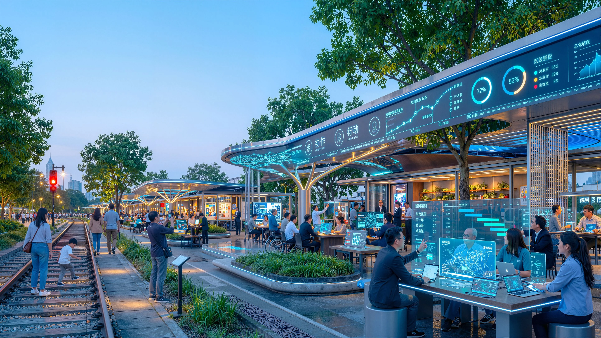

01 · BEIJING AI ORIGIN
Civic Works Commons
A flagship Information Platform, open-source tool bench, small urban test field and accountable sign-off desk turn public questions into maintainable projects.
A capable city, governed by its people. Problems become visible, tools callable, actions verifiable, processes accountable and people can take over. People ask; the city responds.
One public baselineThree task platformsNine civic interfacesHuman takeover
A continuous information canopy displays project state and routes tasks between participating units. Below it, people can still walk, rest, work, ask for staffed help and leave at any time.
The heritage park is not a backdrop. It remains a calm everyday route while collaboration, verification, city feedback and archive become visible and participatory.

AI is not displayed as a finished answer. A city question passes through collaboration, bounded verification, optional experience and correction before a cleared contribution is archived.

Each station is a place to do something, not an AI gallery. By day they are calm and professional; at nights and weekends they can open to the city.

A flagship Information Platform, open-source tool bench, small urban test field and accountable sign-off desk turn public questions into maintainable projects.
Low-intervention calibration, an accessible verification loop, joint university-park testing and staffed explanation make verification publicly legible.
Service interfaces, dispute review, an open-source gallery, contribution wall and shutdown drill make failure governable and results memorable.
Every scenario has a location, a reason to exist, a limit and an accountable human fallback.
Voluntary city questions; clear handling status.
Collaborate without mandatory tracking.
Railway constraint, experiment and correction.
Boundary, failure case, challenge and revision.
Wayfinding does not replace physical signs.
Educators explain limits and attribution.
Resources and referral, never diagnosis.
No face recognition required to participate.
Workers record accept, adjust or pause.
Small, cleared, low-noise contribution release.
A global visitor can understand the Chinese proposition without downloading an app or consenting to surveillance: arrive, understand, collaborate, verify, echo and carry forward.

Trust is maintained by regular public records, not a one-time launch: question source, test boundary, human review method, feedback and correction are made inspectable.

| Season | Public purpose | Minimum record |
|---|---|---|
| Spring | City questions | Question source, relevance and handling route |
| Summer | Open collaboration and verification | Task boundary, test method and human-review role |
| Autumn | City echo and correction | Feedback and keep / adjust / pause decision |
| Winter | Archive and update | Cleared contribution, credit and revision record |
Before any physical delivery, professional teams must verify official boundaries, ownership, conservation requirements, existing conditions, transport and municipal capacity, fire and accessibility requirements, operating responsibility, funding, data permissions and the public-interest case for every service. This page makes no claim of approval or implementation.